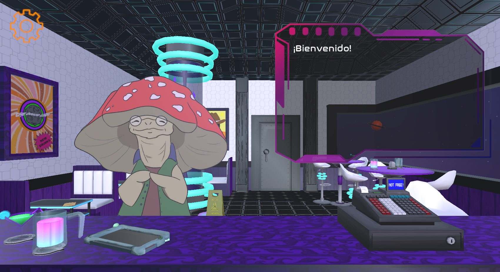
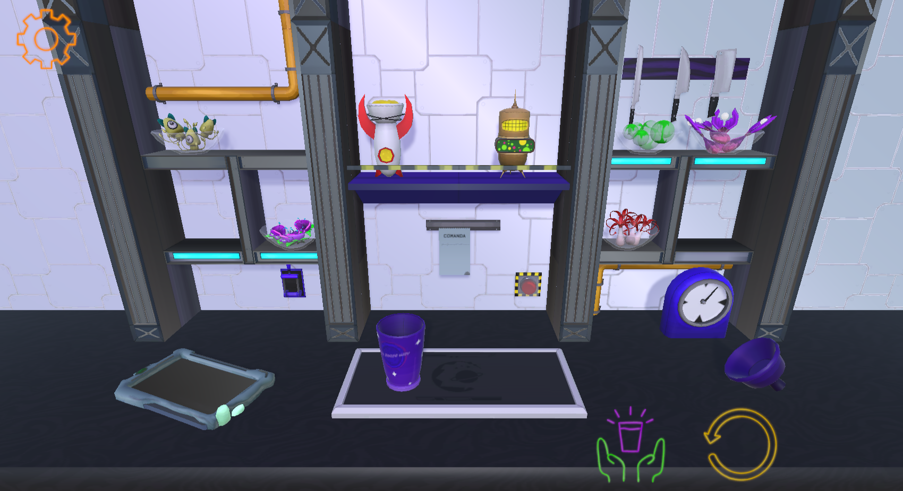
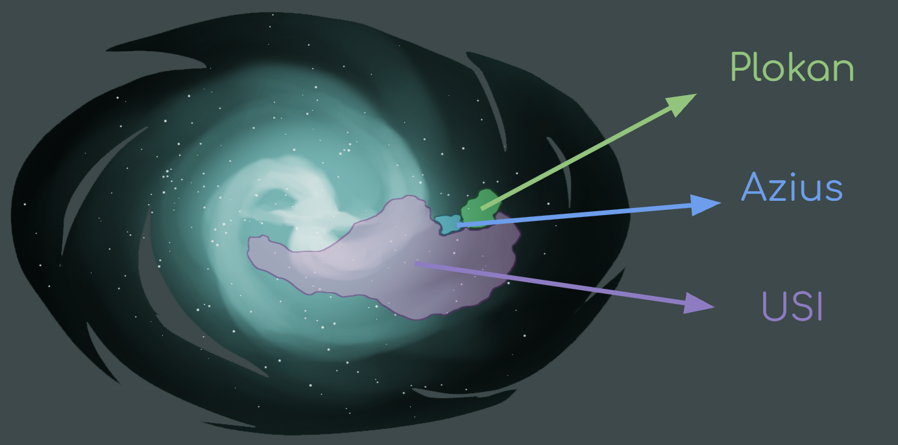

About
This project was developed by a team of university colleagues, covering all the key aspects of video game development — from art and programming to testing and publishing. It was a collaborative effort that led to the creation of a small game studio, with each team member taking on multiple roles and responsibilities.
Tools
Unity, Github
Timeline
September 2022 - January 2023
Roles
Game Design, Narrative Design, Programming.
Game design
Galaxy Trotter is a sci-fi narrative video game where you play as a bartender who gets caught up in interplanetary conspiracies. The main objective is to progress through each day by preparing drinks and serving alien customers.
The gameplay mechanics require players to use their memory and speed to correctly prepare drink recipes within a set time limit.
Characteristics
- Mix of 3D and 2D
- Click & Point
- Narrative-driven
- Level-based progression
- Decision-making and multiple endings
- Playable in a web browser


Narrative design
The game takes place in a fictional galaxy, where the bar where the player works is located on a space station in the Azius star system. Azius is located near the Plokan system and the Interplanetary Systems Union, which are currently at war. This conflict is the central element driving the game's narrative.
The Interplanetary Systems Union is a totalitarian government that controls a large part of the galaxy and seeks to continue expanding its influence. As the conflict unfolds, the player becomes involved in a series of events and conspiracies connected to the war, forcing them to decide whether to stay out of the conflict and protect themselves or take a side.
The player's main goal is to make it through each workday without getting fired by their boss. Throughout the story, their decisions will shape how the events unfold and ultimately determine which ending they reach. The game features four different endings.

Outcomes
- Successfully launched the game on itch.io
- Gained valuable experience in world-building and story-telling.
- Developed a strong understanding of the game development process from concept to launch.